Welcome to CCG
Humanitarian Consulting at UVA
Apply with us!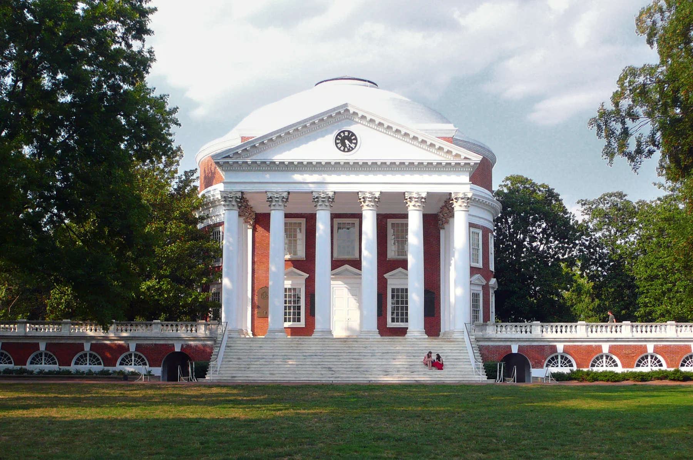
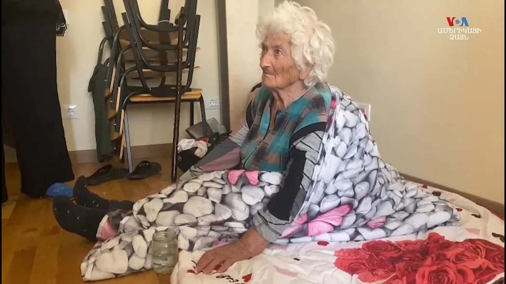
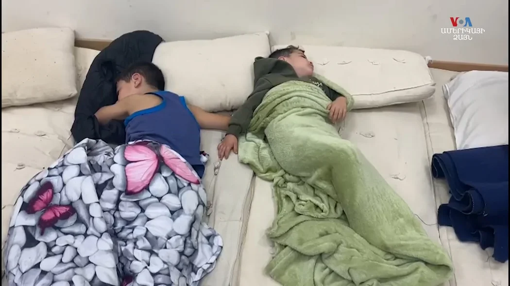
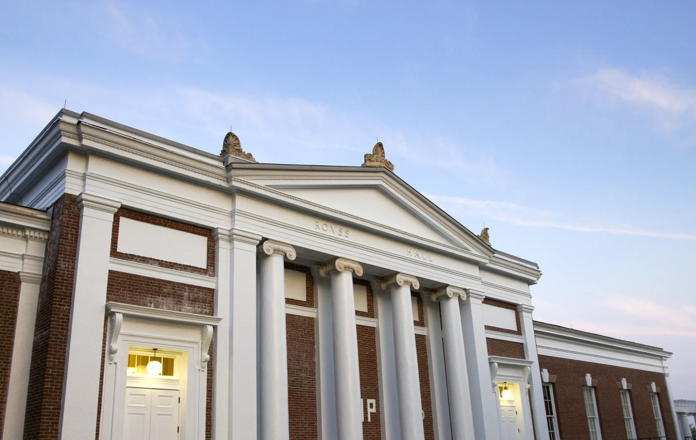
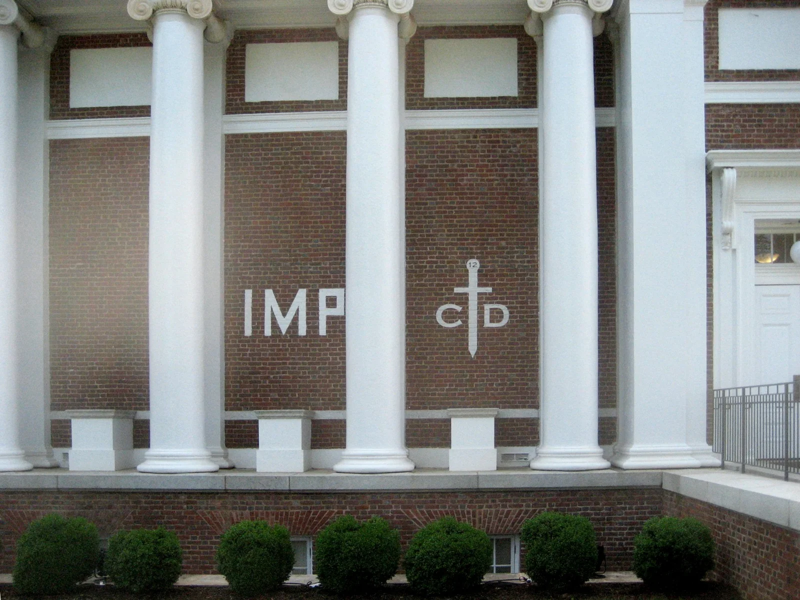
What we do
We consult for Charlottesville businesses and nonprofits. 80% of our revenue from that consulting goes to funding humanitarian aid in the Caucasus.
Our first projects
For our first major project cycle in spring 2027, one student lead and three consultants will take consulting roles for non profits.
Meet our teamMarket research
Study customers, demand, and competitors to help a client decide where to grow.
Business strategy
Compare opportunities and recommend a next step that fits the organization’s goals.
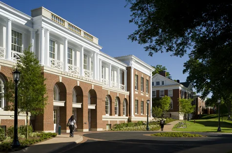
Finance & operations
Review costs, break-even points, and workflows to find practical improvements.
But why the Caucasus?
In September 2023, after Azerbaijan’s military offensive in Nagorno-Karabakh, more than 100,000 ethnic Armenians fled to Armenia. In a single week, families had to find somewhere to live and a way to start again.
For families rebuilding their lives, a stable home, a job, and a place in school matter long after arrival. Our goal is to help fund vetted organizations doing humanitarian work in the Caucasus.
Background on the displacement · UNHCR’s response in Armenia
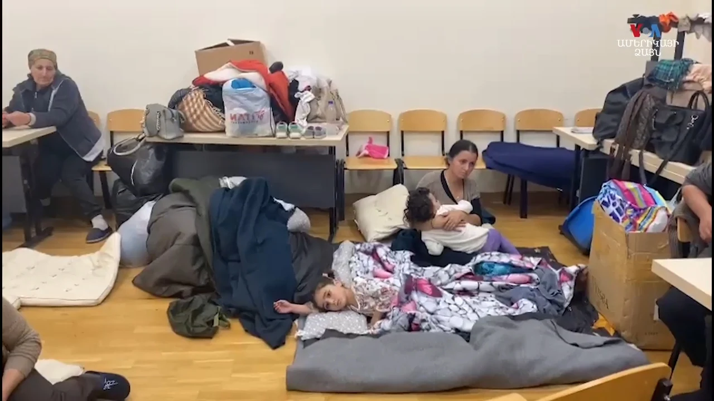
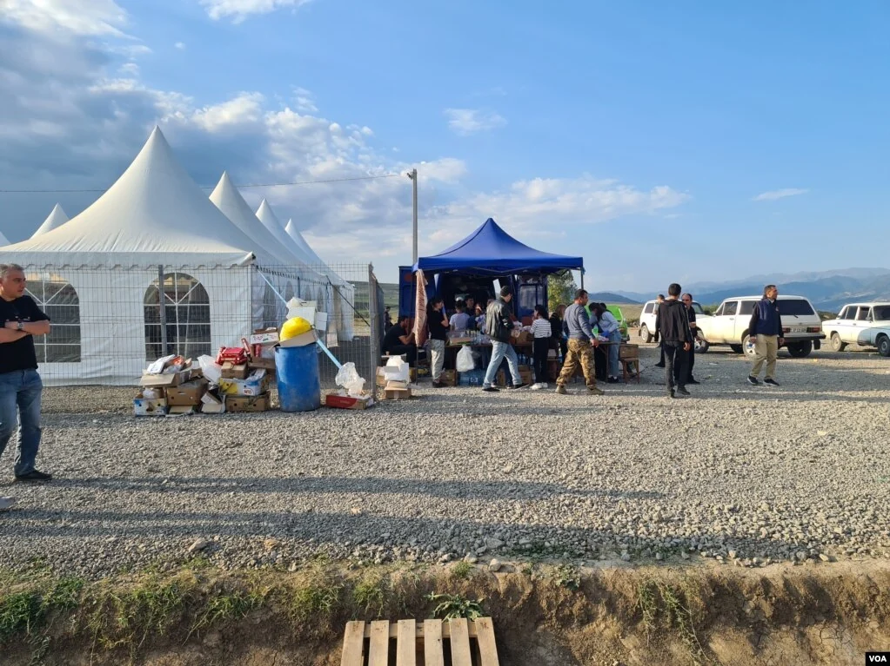
Why the Caucasus matters to us
CCG grew out of a connection to the broader movement around the Caucasian (as in the Caucasus) Union, a civic organization registered in Ukraine. That connection helped inspire us to use student consulting to raise awareness of the region and support organizations working with its communities.
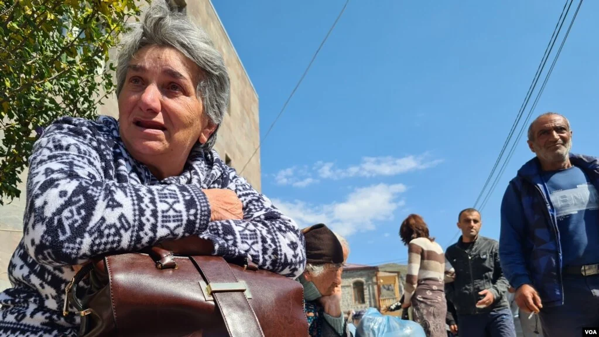
What we look for
- Curious, dependable UVA students
- Team players who ask questions and follow through
- No consulting experience required
What we provide
- Real consulting projects in teams of four
- Training in problem-solving, market research, and financial analysis
- Practice working with clients and presenting recommendations
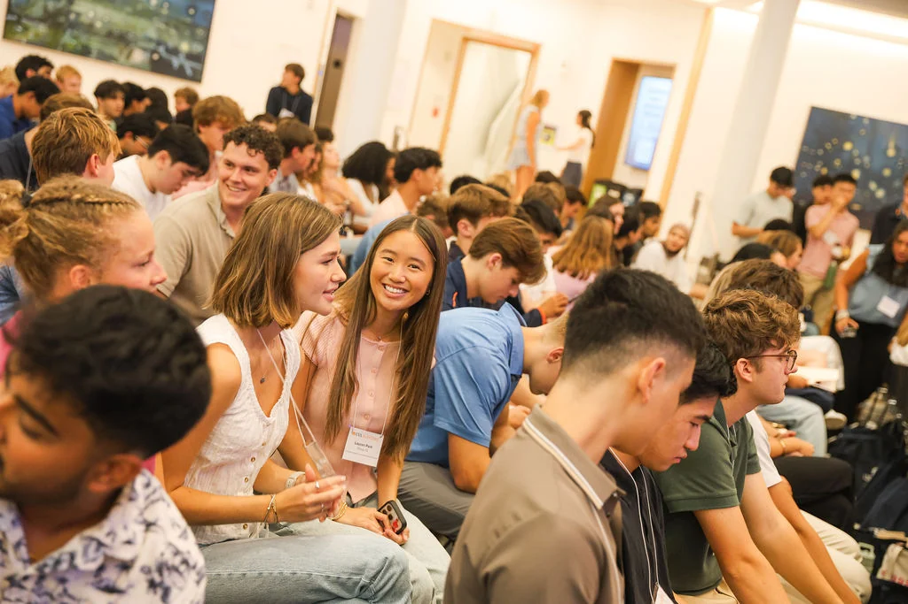
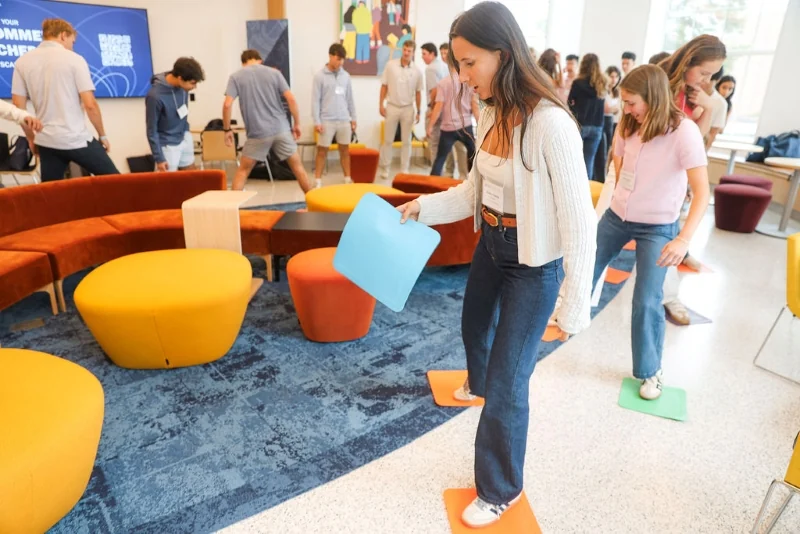
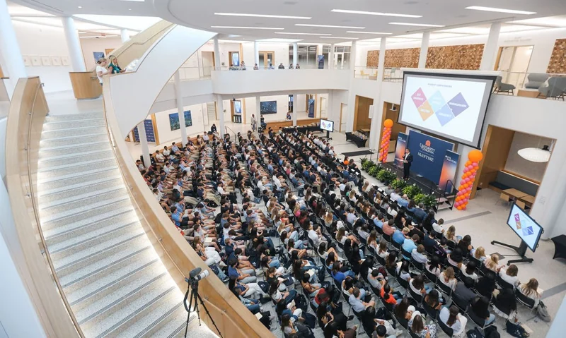